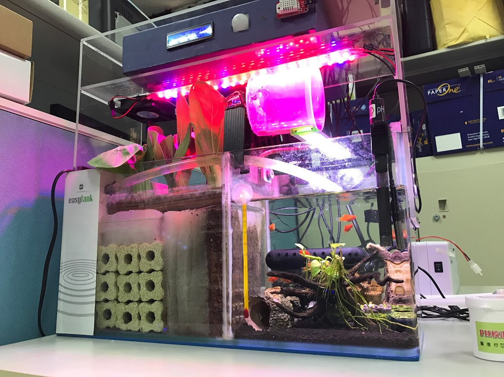
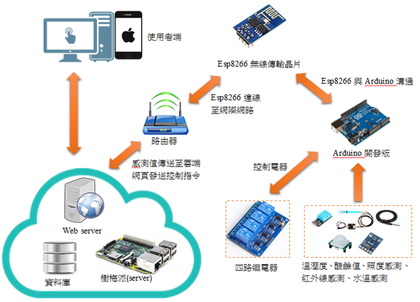
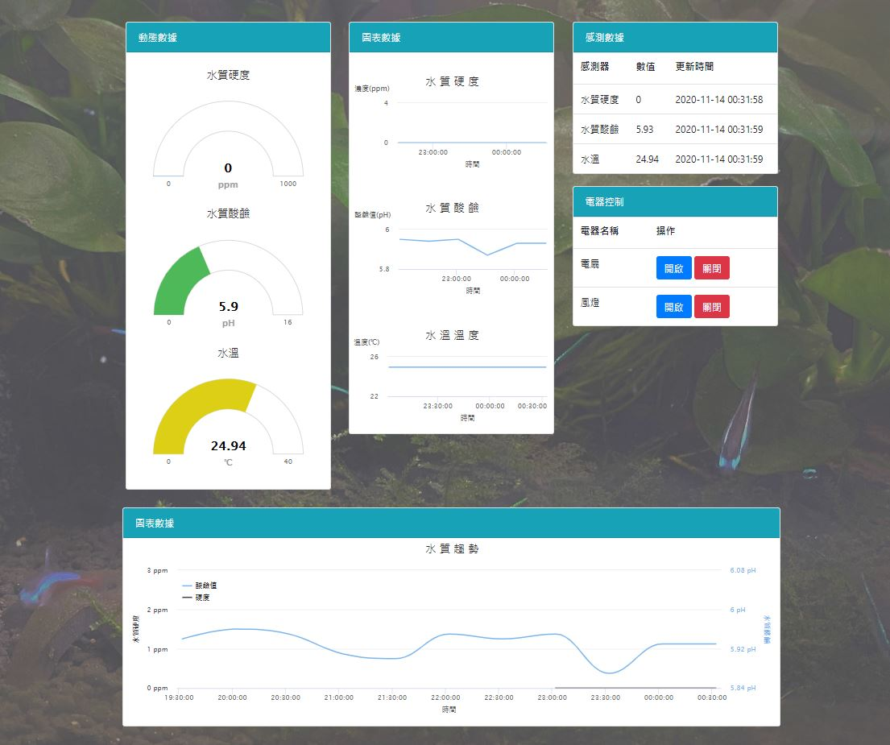

在學作品
魚菜共生系統

魚菜共生（Aquaponics）整合漁業養殖（Aquaculture）與水耕栽培（Hydroponics），形成半封閉式生態循環：水循環進入種植床，一方面提供肥料，另一方面讓水質自淨，形成可持續循環。
系統架構設計

技術領域
成品圖

在學作品

魚菜共生（Aquaponics）整合漁業養殖（Aquaculture）與水耕栽培（Hydroponics），形成半封閉式生態循環：水循環進入種植床，一方面提供肥料，另一方面讓水質自淨，形成可持續循環。

